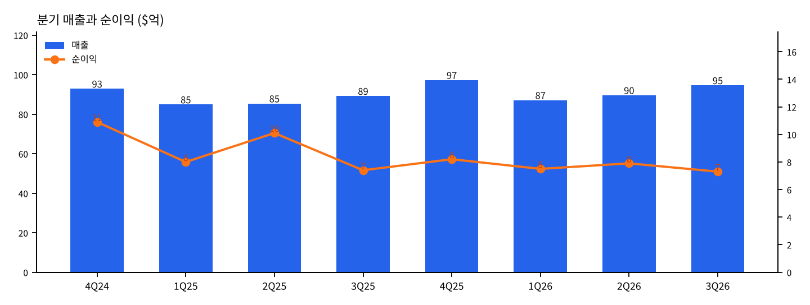
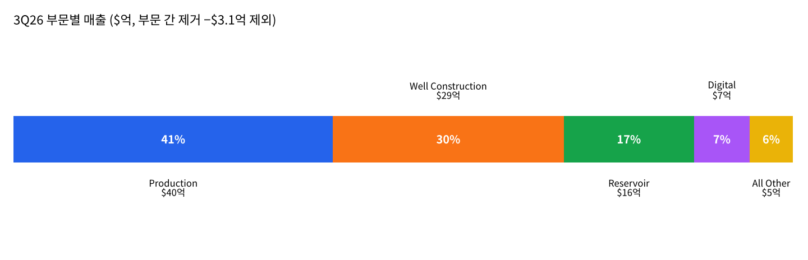
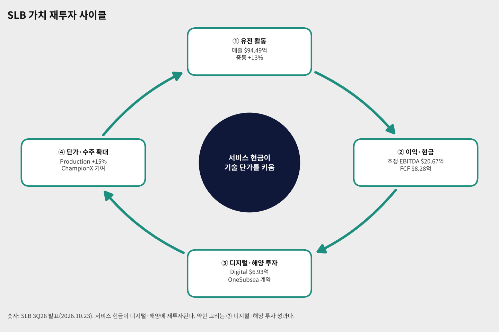

SLB는 원유·가스 회사의 시추·생산·디지털 서비스를 맡고, 활동 수준에 따라 매출이 움직인다. 인수한 ChampionX는 생산 화학 서비스를 보탠다.
| 항목 | 내용 |
|---|---|
| 종목 | SLB (SLB) · NYSE · 유전 서비스 · 텍사스 휴스턴 |
| 최근 분기(3Q26) | 매출 $94.49억, 조정 EPS $0.64 |
| 핵심 사업 | Well Construction, Reservoir Performance, Production Systems, Digital |
| 직원 수 | 약 109,000명(트레이딩뷰) |
| 멀티플 | PER·PEG·P/S는 08~10 항목 표 참조 |
| 직책 | 인물 | 역할·특징 |
|---|---|---|
| CEO | 올리비에 르 푀슈(Olivier Le Peuch) | "전 지역이 분기 대비 성장"이라고 설명 |
| CFO | (확인 필요) | 회사 공개 자료 기준 확인 필요 |
경영 스타일: 국제·해양·디지털 중심. 단가가 높은 심해·생산 시스템과 디지털로 마진을 지키려 한다.
디지털·AI 기반 현장 작업으로 생산 최적화와 회수율을 높인다.
미국 셰일 기업의 해외 진출과 국영 석유사 협력을 기회로 본다.
다음 실적발표는 세 가지 질문에 답하는 자리다.
1. 중동 회복이 이어지나?
2. 해양·OneSubsea 수주가 2027 매출이 되나?
3. EPS가 전년 대비 증가로 돌아서나?
한 줄 판정 규칙: 첫 질문(중동 회복)이 이어지면 약한 고리인 ③ 마진이 회복된다고 본다.
일정: 4Q26 실적 발표는 2027.01.15 예정(트레이딩뷰). 2027 가이던스가 나올 수 있다.
| 분기 | 매출 | 순이익 | EPS | 조정 EPS | 특이 사항 |
|---|---|---|---|---|---|
| 4Q24 | $92.9억 | $10.9억 | 0.77 | 0.92 | |
| 1Q25 | $84.9억 | $8.0억 | 0.58 | 0.72 | |
| 2Q25 | $85.4억 | $10.1억 | 0.74 | 0.74 | |
| 3Q25 | $89.2억 | $7.4억 | 0.50 | 0.69 | |
| 4Q25 | $97.3억 | $8.2억 | 0.55 | 0.78 | |
| 1Q26 | $87.1억 | $7.5억 | 0.50 | 0.52 | |
| 2Q26 | $89.6억 | $7.9억 | 0.52 | 0.55 | |
| 3Q26 | $94.6억 | $7.3억 | 0.49 | 0.64 | 전 지역 순차 성장, 중동 회복, ChampionX 기여 |
매출은 트레이딩뷰 스캐너의 분기 총매출이라 회사가 발표한 순매출과 다를 수 있다. SLB는 2025년 ChampionX를 인수해 전년 대비 매출이 인수 효과를 포함한다. 매출·순이익·EPS(GAAP 희석)는 트레이딩뷰 스캐너, 조정 EPS는 트레이딩뷰 실적 페이지의 Reported 값이다. 분기 정렬은 오래된 분기→최신이다.

흐름 요약: 최근 분기 매출은 $94.6억로 전년 동기 $89.2억 대비 +6.1%, 순이익은 $7.3억(전년 $7.4억)다. 최근 4분기 GAAP EPS는 $2.06, 조정 EPS는 $2.49다.
| 항목 | 내용 | 3Q26 매출 | 비고 |
|---|---|---|---|
| Production Systems | 생산 시스템·ChampionX | $40.00억 | +15% |
| Well Construction | 시추 서비스 | $28.88억 | −3% |
| Reservoir Performance | 저류층 서비스 | $16.34억 | −3% |
| Digital | 디지털 | $6.93억 | +5% |
| All Other | 기타 | $5.44억 | +37% |

Production Systems가 가장 크고 ChampionX 인수 효과가 반영돼 있다.
SLB는 에너지 업계의 기술로 생산을 최적화하고 탈탄소를 지원하는 것을 목표로 한다.
| 축 | 내용 |
|---|---|
| 규모 | 분기 매출 $94.49억 |
| 현금 | FCF $8.28억 |
| 배당 | 분기 $0.295 |

| 이동평균 | 값 | 종가 대비 | 위치 |
|---|---|---|---|
| 5일선 | $49.51 | -2.2% | 종가 아래 |
| 20일선 | $51.34 | -5.7% | 종가 아래 |
| 50일선 | $50.84 | -4.8% | 종가 아래 |
| 100일선 | $51.12 | -5.3% | 종가 아래 |
| 200일선 | $51.58 | -6.1% | 종가 아래 |
52주 고가 $60.46(2026-08-31)·저가 $34.65(2025-11-21) 범위에서 종가 $48.42는 모든 이동평균선 아래이고.
| 규칙 | 기준 | 현재 값 | 신호 |
|---|---|---|---|
| 장기 추세 필터 | 종가 vs 200일선 | $48.42 < $51.58 | 매도 |
| 중장기 교차 | 50일선 vs 200일선 | $50.84 < $51.58 | 매도 |
| 단기 교차 | 20일선 vs 50일선 | $51.34 > $50.84 | 매수 |
| 돈키언 채널 | 55일 고가 $59.36 / 저가 $47.17 | 중간값 $53.27 아래 | 매도 |
| 1개월 모멘텀 | 21거래일 수익률 | -5.2% (기준 $51.10) | 매도 |
| 3개월 모멘텀 | 63거래일 수익률 | -10.1% (기준 $53.87) | 매도 |
| 6개월 모멘텀 | 126거래일 수익률 | -15.4% (기준 $57.25) | 매도 |
| 12개월 모멘텀 | 252거래일 수익률 | +34.4% (기준 $36.04) | 매수 |
| 종합 (8개 평균) | -0.50 | 매도 |
해석: 매수 신호 2개(단기 교차, 12개월 모멘텀), 매도 신호 6개(장기 추세 필터, 중장기 교차, 돈키언 채널, 1개월 모멘텀, 3개월 모멘텀, 6개월 모멘텀). CTA 점수 -0.50(매도). 14일 ATR $1.66 (3.4%), 52주 고가 $60.46 · 저가 $34.65.
| 가격 | 기준 | 무엇이 바뀌나 |
|---|---|---|
| $59.36 | 55일 고가 | 돌파 시 채널 상단 갱신 |
| $57.25 | 6개월 모멘텀 기준가 | 종가가 이 가격 위면 6개월 신호 매수 |
| $53.87 | 3개월 모멘텀 기준가 | 종가가 이 가격 위면 3개월 신호 매수 |
| $53.27 | 돈키언 중간값 | 55일 채널 중간값 위/아래로 신호가 바뀜 |
| $51.58 | 200일선 | 종가가 이 선 위/아래인지로 장기 추세 신호가 바뀜 |
| $51.10 | 1개월 모멘텀 기준가 | 종가가 이 가격 위면 1개월 신호 매수 |
| $47.17 | 55일 저가 | 이탈 시 채널 하단 갱신 |
| $36.04 | 12개월 모멘텀 기준가 | 종가가 이 가격 위면 12개월 신호 매수 |
가격 수준은 신호가 바뀌는 기준선일 뿐 진입·청산 가격 제안이 아니다. 20일/50일 교차는 이동평균 자체가 움직여 단일 가격으로 표시하지 않았다. 일봉·주봉은 종가 기준 직접 계산(고저 데이터 미사용)이다.
| 악재 요인 | 내용 | 강도 |
|---|---|---|
| 중동 불안 | 후반 혼란, 회복 속도 불확실 | 중간 |
| 이익 감소 | 조정 EPS 전년 −7%, EBITDA 보합 | 중간 |
| 활동 의존 | 고객 유전 투자 수준에 의존 | 참고 |
| 티커 | 회사 | PER(TTM) | PEG | P/S | EPS 성장(YoY) |
|---|---|---|---|---|---|
| SLB | SLB | 19.4배 | – | 1.94배 | -19% |
| HAL | Halliburton | 13.4배 | 0.23 | 1.16배 | +58% |
| BKR | Baker Hughes | 16.2배 | 78.67 | 1.64배 | +0% |
| COP | ConocoPhillips | 14.1배 | 0.43 | 2.46배 | +34% |
| EOG | EOG Resources | 9.7배 | 0.18 | 2.77배 | +54% |
비교 결론: SLB의 PER 19.4배는 Halliburton·Baker Hughes보다 높다. EPS 성장률이 음수라 PEG는 산출 불가다.
현금·부채는 트레이딩뷰 스캐너 값이다. ChampionX 인수로 부채가 늘었다.
| 지표 | 값 | 출처 | 해석 |
|---|---|---|---|
| 현금·단기투자 | $36억 | 트레이딩뷰 스캐너(최근 분기) | |
| 총부채 | $128억 | 트레이딩뷰 스캐너(최근 분기) | |
| 순부채(부채−현금) | $92억 | 내 계산 | 현금 대비 부채 부담 |
| 잉여현금흐름(TTM) | $46억 | 트레이딩뷰 스캐너 | |
| TTM 매출 | $369억 | 트레이딩뷰 스캐너 |
| 기준 | 매출 | P/S | 비고 |
|---|---|---|---|
| 내 계산(종가 ÷ 최근 4분기 매출 합계) | $368.6억 | 1.94배 | 시총은 정렬용 데이터에서만 사용 |
| 동종(트레이딩뷰) | – | HAL 1.16배 · BKR 1.64배 · COP 2.46배 · EOG 2.77배 | 11.19 |
해석: FCF $8.28억 분기 기준으로 배당($0.295)과 부채 상환을 감당한다(내 해석).
EBITDA는 영업활동의 현금 창출력을 보는 지표이고, PEG는 PER을 EPS 성장률로 나눈 값이다. EBITDA·FCF는 트레이딩뷰 TTM 값이다.
| 지표 | 값 | 산출 |
|---|---|---|
| EBITDA(TTM) | $75억 | 트레이딩뷰 스캐너 |
| EBITDA 마진 | 20.3% | EBITDA ÷ TTM 매출(내 계산) |
| FCF 마진 | 12.5% | FCF ÷ TTM 매출(내 계산) |
| PER(GAAP TTM) | 23.5배 | $48.42 ÷ $2.06 |
| PER(조정 TTM) | 19.4배 | $48.42 ÷ $2.49 |
| 방식 | PER | EPS 성장률 | PEG | 판정 |
|---|---|---|---|---|
| 조정 EPS (TTM $2.49) | 19.4배 | -19% ($3.07 → $2.49) | 산출 불가 | 참고 |
| GAAP EPS (TTM $2.06) | 23.5배 | -20% ($2.59 → $2.06) | 산출 불가 | 참고 |
판정: 조정 EPS 기준 PEG 산출 불가(EPS 성장 -19% 또는 음수) PEG 기준은 1.0 이하 투자 적격, 0.5 이하 적극 매수다. EPS 성장률은 최근 4분기 EPS 합계를 직전 4분기 합계와 비교한 값(내 계산)이고, 일회성 항목이 있으면 조정 EPS 행을 함께 본다.

SLB의 사이클: 서비스 현금이 디지털·해양 기술에 재투자돼 수주와 단가를 키우고, 늘어난 활동이 다시 현금이 되는 순환이다.
| 고리 | 현재 숫자·근거 |
|---|---|
| ① 유전 활동 | 3Q26 매출 $94.49억 · 중동 분기 대비 +13% |
| ② 이익·현금 | 조정 EBITDA $20.67억 · FCF $8.28억 |
| ③ 디지털·해양 투자 | Digital $6.93억(+5%) · OneSubsea 신규 국제 계약 |
| ④ 단가·수주 확대 | Production Systems +15% · ChampionX 분기 기여 $9.56억 |
사이클의 특징: 약한 고리는 ③ 디지털·해양 투자 성과다(조정 EPS가 전년보다 줄었다). "(내 해석)"은 보고서 수치가 아닌 해석이다.